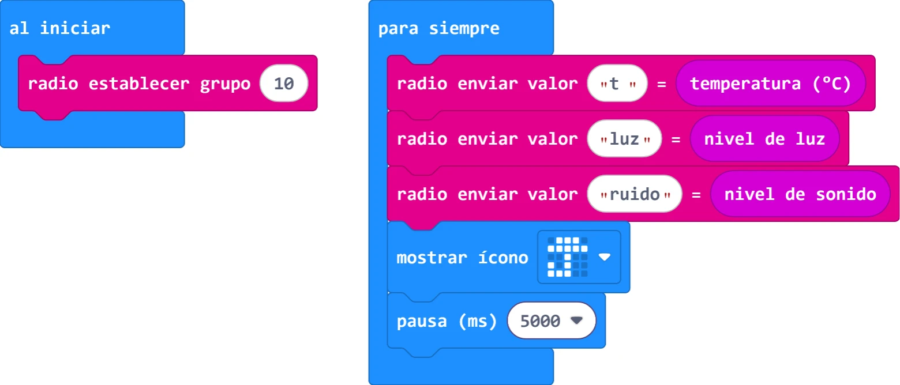
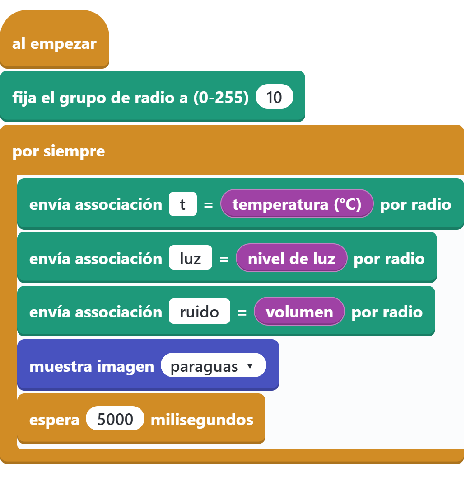

Inicio › Talleres › Proyectos tipo
Estación meteorológica
Una estación que mide temperatura, luz y ruido, muestra los datos en rotación y los envía por radio a una placa «panel» situada en otra parte del aula.
- 1EstaciónMide temperatura, luz y ruido y lo envía por radio cada 5 segundos.
- 2Garita ventiladaProtege la placa del sol directo y deja pasar el aire.
- 3Panel en el aulaRecibe los datos (grupo de radio 10) y los muestra con A, B y el logotipo.
Necesitas
- Dos micro:bits V2
- Portapilas para la estación
- Una caja con agujeros para protegerla (puede imprimirse en 3D)
Paso a paso
- Programa la estación: cada 5 segundos envía por radio la temperatura, la luz y el ruido con un nombre para cada dato.
- Programa el panel: al recibir cada dato, lo guarda; con A muestra la temperatura, con B la luz y con el logotipo el ruido.
- Coloca la estación en la ventana o en el patio y compara los datos con los de una web meteorológica.
El programa del panel
Con MakeCode, el panel usa al recibir radio nombre valor: si el nombre es «t», guarda el valor en la variable temperatura, y así con cada dato. En Python, separa el texto recibido por el signo «=» con mensaje.split("=").
Programa

Probar en el simulador
Es el simulador oficial de MakeCode: pulsa sus botones, toca el logotipo o mueve los controles de los sensores.
Ver y copiar el código JavaScript
radio.setGroup(10)
basic.forever(function () {
radio.sendValue("t", input.temperature())
radio.sendValue("luz", input.lightLevel())
radio.sendValue("ruido", input.soundLevel())
basic.showIcon(IconNames.Umbrella)
basic.pause(5000)
})En MakeCode abre la pestaña JavaScript, borra lo que haya, pega el código y vuelve a Bloques.

Usa las bibliotecas Radio, Sensores básicos, Micrófono, Pantalla LED. Al abrir el proyecto se cargan solas.
Abrir en MicroBlocks Descargar .ubp
Abre MicroBlocks en Chrome o Edge. Si pregunta si quieres actualizar una biblioteca a una versión nueva, pulsa Sí.
from microbit import *
import radio
radio.on()
radio.config(group=10)
while True:
radio.send("t=" + str(temperature()))
radio.send("luz=" + str(display.read_light_level()))
radio.send("ruido=" + str(microphone.sound_level()))
display.show(Image.UMBRELLA)
sleep(5000)Abrir el editor de Python Descargar .py
En el editor de Python pulsa Abrir… y elige el archivo .py, o pega el código.
¿Y si…?
- Registra los datos (MakeCode: extensión datalogger; Python: módulo
log) y haz gráficas. - Añade un sensor de humedad del aire con un kit.
Para el profesorado
Este proyecto conecta con Ciencias de la Naturaleza y Matemáticas (tablas, gráficas, medias). La temperatura de la micro:bit es aproximada: contrastadla con un termómetro.
- 10 min: presentación del reto y del material.
- 15 min: diseño en papel (qué mide, qué decide, qué hace).
- 25 min: montaje y programación por fases.
- 10 min: prueba, mejora y presentación al grupo.